Cómo funciona el software, pantalla por pantalla: la orden de compra, la Proforma, la cartera, la Lista de Empaque, la Liquidación y la factura, en un solo flujo que nunca inventa un dato.
Sobre las capturas: todas vienen del entorno de pruebas, con datos SIMULADOS (clientes, referencias y órdenes ficticias, rotuladas así en pantalla y en cada correo). No aparece ningún dato real de Oben ni de sus clientes.
Septiembre 2026 Preparado por Paradixe para Oben Group
En una página
Menos digitación, cero reprocesos y cada paso a la vista
Oben Xmart se conecta a los sistemas de Oben y hace el trabajo repetitivo: lee las órdenes de compra, prepara la Proforma, hace el seguimiento con el cliente y con cartera, arma los documentos de exportación y avisa a quien corresponde. Las personas deciden; el sistema ejecuta y deja constancia.
1 → 7
Un correo, siete documentos
Cuando Oben aprueba el corte de una orden, la Lista de Empaque y sus reportes salen solos, completos y en el formato de Oben.
0
Datos inventados
Si falta una dirección, una equivalencia o una fecha, el caso se detiene y lo pide. Nunca se rellena con supuestos.
100%
Confirmado por una persona
Con el "freno de mano", cada escritura en OBEN MAS espera la confirmación de Customer Service hasta que ustedes decidan automatizarla.
24/7
Seguimiento que no se olvida
Recordatorios al cliente, avisos a cartera y al comercial, reintentos y escalamiento si algo falla.
En producción ya funcionando con datos reales en el servidor de Oben
Instalado en el servidor de Oben; se activa con el piloto o con las APIs de Oben
Espera a Oben depende de una API o un dato de Oben (mientras tanto, simulado)
Qué gana cada equipo
Customer ServiceDeja de digitar órdenes: revisa el caso armado y confirma con un clic.
CarteraRecibe cada aprobación al instante; las órdenes PND se retienen solas.
ComercialesSaben cuándo su orden se activa, se rechaza o sigue esperando cartera.
COMEXEl paquete de exportación completo apenas se aprueba el corte.
FacturaciónBorrador con los datos de la orden y el cierre de la liquidación.
GerenciaTablero por etapa, tiempos promedio y auditoría de cada paso.
Oben Xmart · Cómo funciona2
Mapa del proceso
Un pedido de punta a punta, en cinco etapas
Cada etapa toma lo que dejó la anterior. Donde hoy falta una API de Oben, el sistema funciona completo contra un simulador rotulado, y se conecta al sistema real sin rehacer nada.
1
Comercial
Orden de compra por correo (PDF, Excel o texto)
Traducción con la tabla de equivalencias y conversión de unidades
Proforma en OBEN MAS → cubicaje → envío al cliente
Aprobación, cartera y orden de venta activa
InstaladoAPIs OBEN MAS
2
Producción y corte
Producción en planta (fuera de Oben Xmart)
Cambios de fecha de entrega: aviso automático al comercial
Cierre del corte → correo "OV Aprobada En Corte"
Disparador real
3
Lista de Empaque
Paquete completo: Lista Especial, Unificada, Detallada, Consumos y Hoja de Costos
Reintentos y escalamiento si falta algo
Regla PND: no se genera si cartera no liberó
En producciónRegla PND instalada
4
Liquidación
Borrador con kilos, FOB y cargos de destino
Registro en Oben (encabezado + detalle)
Correo de cierre a COMEX y Facturación
InstaladoFórmula Incoterm
5
Facturación
Borrador PDF con precios y dirección de entrega
Factura electrónica al enviar a COMEX
InstaladoProveedor DIAN
Cuando pasa esto, el sistema hace aquello
Llega una OCAbre un caso, lo traduce y marca lo que falta.
Planeación cubicaEnvía la Proforma al cliente y programa recordatorios.
El cliente respondeAprueba, rechaza o modifica, leído del mismo hilo.
Cartera liberaLa orden de venta pasa a activa y se avisa al comercial.
Se cierra el corteArma y envía el paquete de la Lista de Empaque.
Último pallet en bodegaDispararía la Liquidación (pendiente de ese evento en Oben).
Oben Xmart · Cómo funciona3
Cómo trabaja
Seis reglas que el sistema no se salta
Están en el código y tienen pruebas automáticas que fallan si alguien las rompe.
Nunca se inventa un dato
Lo que no viene en la orden, en el maestro o en OBEN MAS queda como "falta" y bloquea el paso siguiente hasta que una persona lo resuelva.
Lo simulado siempre se marca
Pantallas, correos y documentos con datos de prueba llevan el rótulo SIMULADO. Nada simulado se escribe en un OBEN MAS real ni sale a un cliente real.
Freno de mano
En modo supervisado, crear, aprobar, modificar, anular o activar en OBEN MAS espera la confirmación de una persona. Pasar a automático es decisión de Oben.
Nada sale incompleto
Si un documento del paquete falla, se reintenta cada 10 minutos; a los 5 intentos se escala a José y Jorge en vez de enviarse a medias.
Solo remitentes autorizados
Una orden de compra solo se atribuye a un cliente si llega desde uno de sus dominios registrados. Un dominio parecido se trata como sospechoso.
Todo queda registrado
Cada caso tiene su bitácora (qué pasó, cuándo y quién lo confirmó) y cada acción queda en la auditoría del sistema.
Oben Xmart · Cómo funciona4
Centro de Operaciones
Datos de prueba
oben-xmart / operacionesSIMULADO
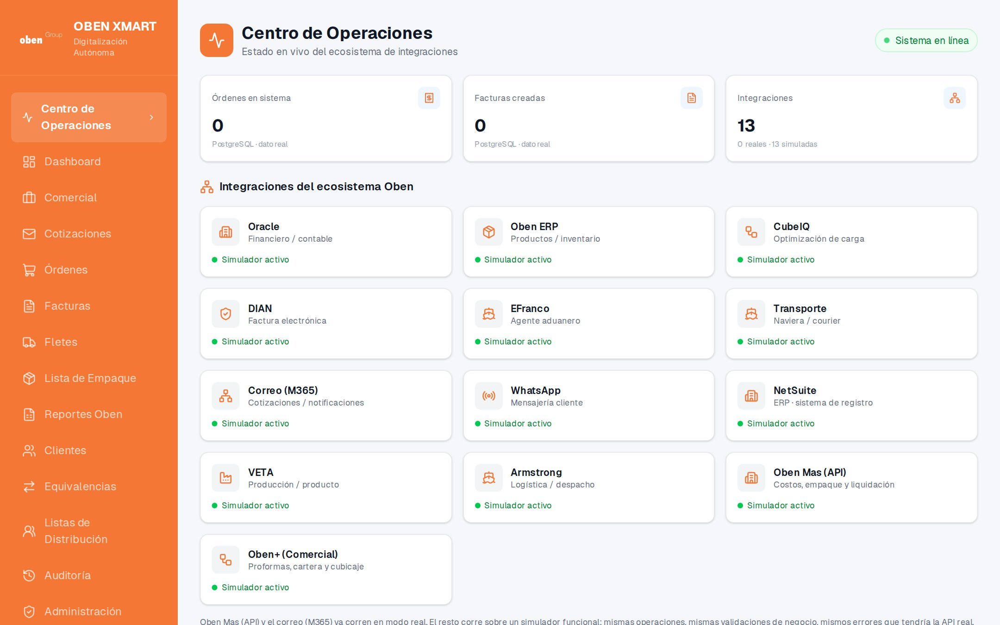
El estado de cada conexión, de un vistazo
1
Un tablero por sistema
OBEN MAS, Oben Mas (API de reportes), correo, DIAN, NetSuite, transporte y los demás sistemas del ecosistema, cada uno con su estado.
2
Real o simulador, siempre visible
Cada conexión dice si está hablando con el sistema real o con su simulador. En esta demo todas están en simulador; en el servidor de Oben, la API de reportes y el correo ya corren en real.
3
Cambiar a real no rehace nada
El simulador responde con la misma forma de datos que la API real: cuando Oben entrega una API, se conecta y el resto del flujo sigue igual.
Oben Xmart · Cómo funciona5
Comercial · Tablero
Datos de prueba
oben-xmart / comercialSIMULADO
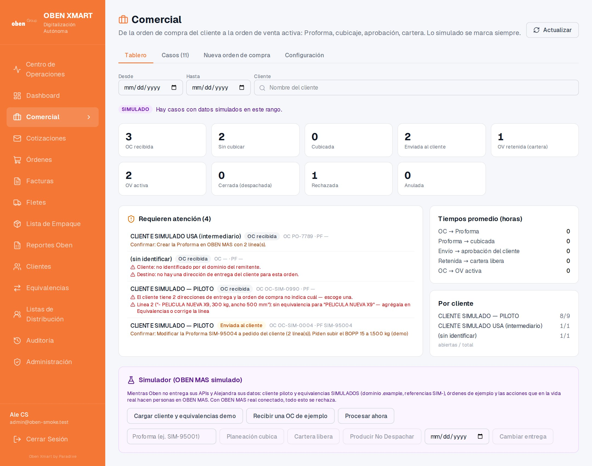
1
2
3
4
Todos los pedidos, por etapa
1
Embudo por estado
OC recibida → sin cubicar → cubicada → enviada al cliente → retenida por cartera → activa. Filtrable por fechas y por cliente.
2
Requieren atención
Lo que espera a una persona: una confirmación del freno de mano, una dirección por escoger, una equivalencia que falta o un remitente no reconocido.
3
Tiempos y clientes
Horas promedio entre etapas (de la OC a la Proforma, del envío a la aprobación, de retenida a activa) y pedidos abiertos por cliente.
4
Simulador (solo en pruebas)
Hace lo que en la vida real hacen Planeación, cartera o producción en OBEN MAS, para poder recorrer el flujo completo. Desaparece con OBEN MAS real conectado.
Oben Xmart · Cómo funciona6
Comercial · Lectura de la orden de compra
Datos de prueba
Una orden en inglés, en libras y pulgadas, traducida sin digitar
1
Llega por correo
Un cliente intermediario de EE. UU. escribe "PO 7789 | End customer: ACME PACKAGING". El sistema lo identifica por su dominio y toma el cliente final del asunto.
2
Traduce sus referencias
"BOPP CLEAR 20 MIC" se convierte en la referencia Oben según la tabla de equivalencias de ese cliente. Nada se adivina: sin equivalencia, la línea queda como faltante.
3
Convierte unidades
4.409,25 lb → 2.000 kg; 20 in → 508 mm. Cada conversión queda escrita al lado de la línea para revisarla.
4
Destino desde el maestro
País y dirección salen del maestro del cliente en OBEN MAS; la orden queda como exportación a USA.
5
Espera la confirmación
Customer Service revisa, corrige si hace falta y confirma: recién ahí se crea la Proforma en OBEN MAS.
comercial / caso PO-7789SIMULADO
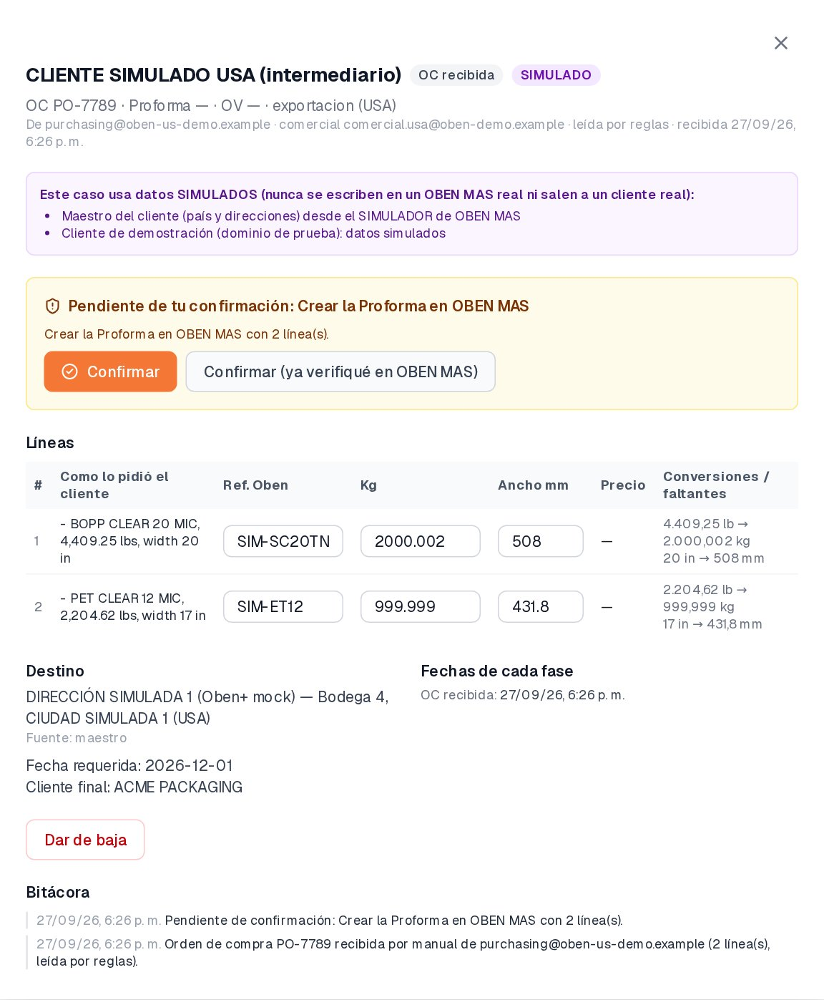
Oben Xmart · Cómo funciona7
Comercial · Cuando falta algo, se detiene
Datos de prueba
El sistema prefiere preguntar antes que equivocarse
comercial / caso OC-SIM-0990SIMULADO
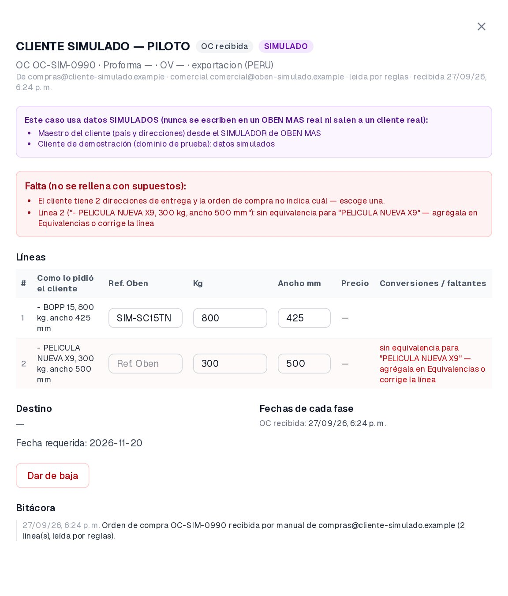
Dos faltantes, cero supuestos. El cliente tiene dos direcciones y la orden no dice cuál; y pide un producto que no está en su tabla de equivalencias. El caso no avanza hasta que Customer Service escoge la dirección y registra la equivalencia.
comercial / remitente no reconocidoSIMULADO
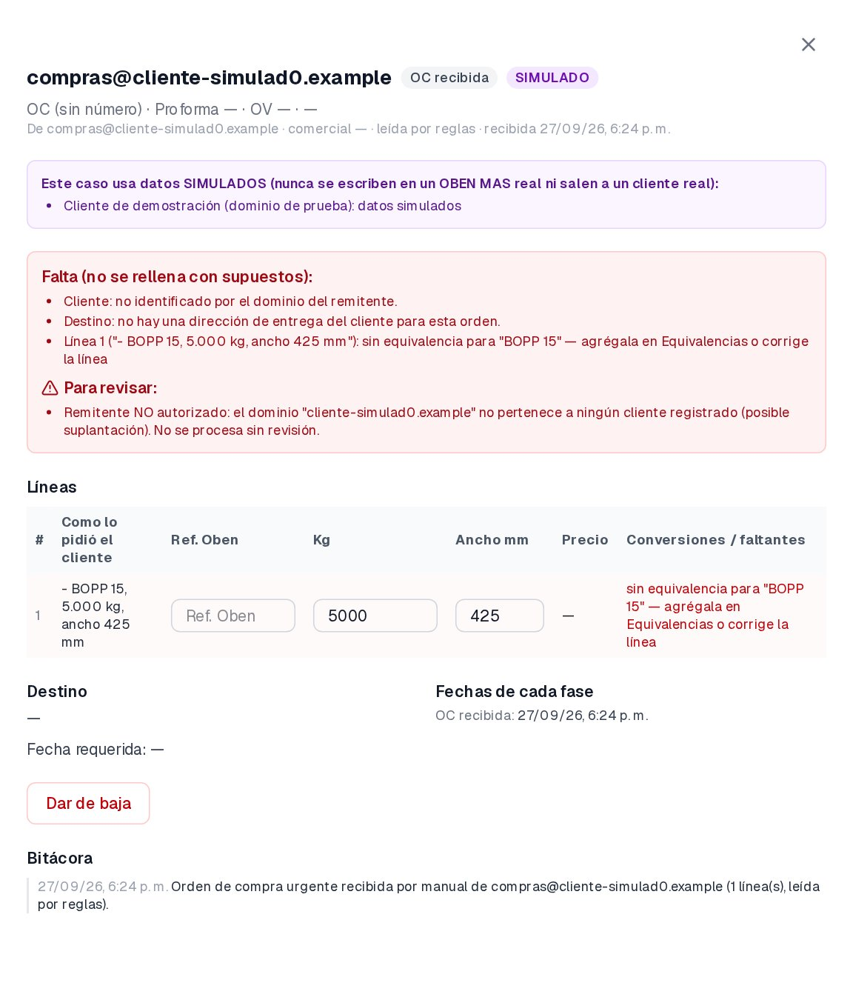
Posible suplantación. Llega "cliente-simulad0.example" (con cero) pidiendo cambiar la dirección de entrega. No coincide con ningún dominio autorizado: no se asigna a ningún cliente y queda para revisión.
Oben Xmart · Cómo funciona8
Comercial · Un pedido completo
Datos de prueba
caso OC-SIM-0009 · encabezado y líneasSIMULADO
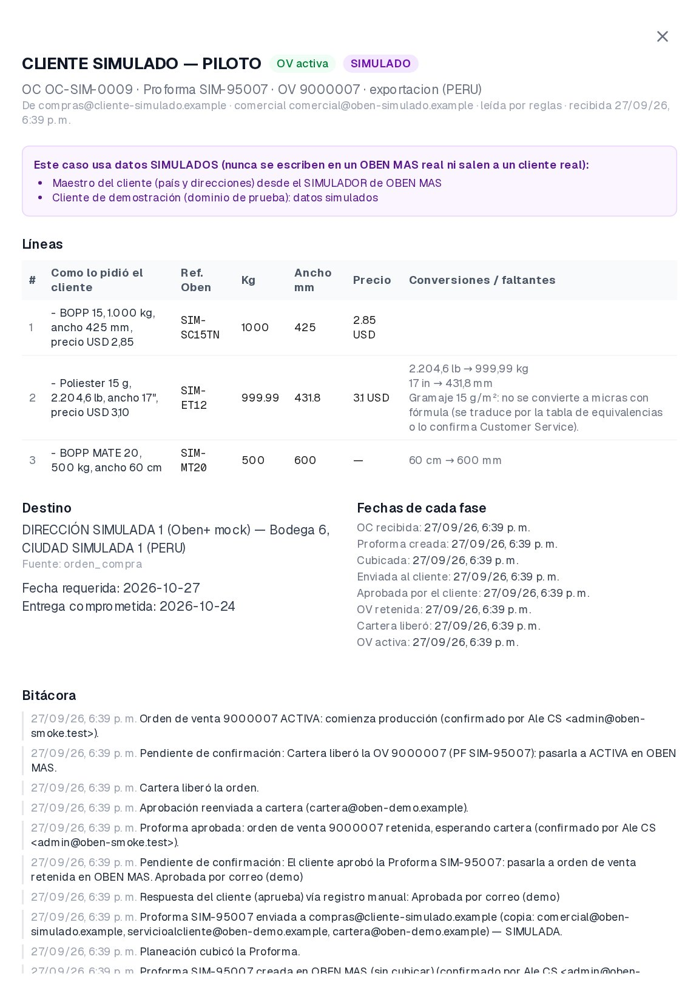
caso OC-SIM-0009 · fechas y bitácoraSIMULADO
De la OC a la orden de venta activa, con cada paso firmado
1
Fechas de cada fase
OC recibida, Proforma creada, cubicada, enviada, aprobada, retenida, liberada por cartera y activa.
2
Bitácora legible
Qué pasó y quién lo confirmó, con nombre y correo. Los correos al cliente, a cartera y al comercial también quedan anotados.
3
Fecha comprometida
Si Planeación mueve la entrega en OBEN MAS, el cambio queda en el historial y se avisa.
Oben Xmart · Cómo funciona9
Comercial · Casos
Datos de prueba
oben-xmart / comercial · casosSIMULADO
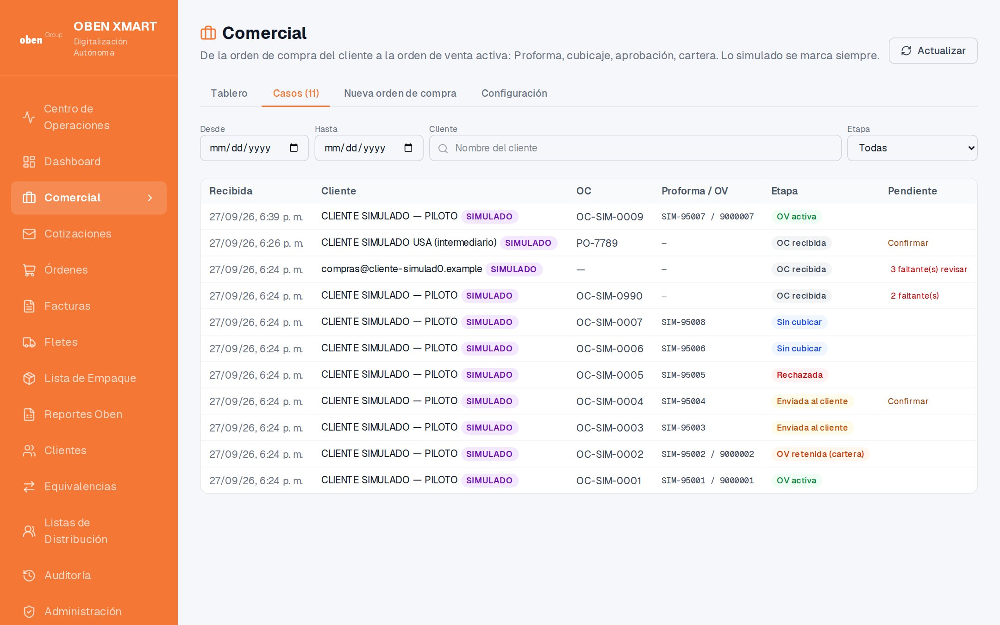
caso OC-SIM-0004 · el cliente pide un cambio
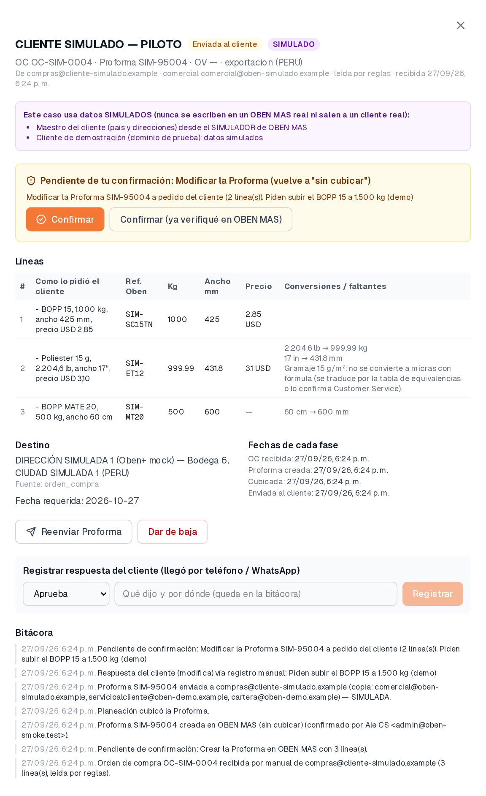
Aprueba, rechaza o modifica. La respuesta del cliente se reconoce en el mismo hilo del correo. Si pide cambiar cantidades, la Proforma vuelve a "sin cubicar" para que Planeación la cubique otra vez, y la nueva versión sale al cliente.
Oben Xmart · Cómo funciona10
Comercial · Correos automáticos
Correos de prueba
Cada quien recibe lo suyo, en el momento justo
Estos correos salieron del entorno de pruebas durante la demo. Los destinatarios salen de las listas de distribución que Oben configura; en pruebas todos los asuntos llevan [SIMULADO].
[SIMULADO] Proforma SIM-95007 — su orden de compra OC-SIM-0009
Adjuntamos la Proforma correspondiente a su orden de compra. Por favor revísela y respóndanos en este mismo correo con su aprobación (Proforma firmada o confirmación por escrito), o indíquenos si requiere algún cambio.
Proforma SIM-95007.pdf
A cartera · cuando el cliente aprueba
Para: cartera@oben-demo.example
[SIMULADO] Proforma SIM-95007 aprobada — OV 9000007 retenida, pendiente de cartera
El cliente aprobó la Proforma. La orden de venta quedó retenida en OBEN MAS a la espera de la validación de cartera. Mientras no libere, el comercial recibe seguimiento.
A Customer Service · freno de mano
Para: servicioalcliente@oben-demo.example
[SIMULADO] [Comercial] Confirmar: Cartera liberó la OV 9000007: pasarla a ACTIVA en OBEN MAS
El flujo está en modo supervisado: esta acción espera tu confirmación en Oben Xmart → Comercial.
Al comercial · orden activa
Para: comercial@oben-simulado.example · CC: Customer Service
[SIMULADO] [Comercial] Orden de venta 9000007 activa
Cartera liberó la orden y quedó activa en OBEN MAS: comienza producción.
Otros avisos automáticos del flujo
Recordatorio al cliente"Re: Proforma … [PF n]" en el mismo hilo, mientras no responda.
Seguimiento al comercial"OV … retenida por cartera hace N día(s)", hasta que cartera libere.
Cambio de fecha de entregaA Customer Service cuando Planeación mueve la fecha comprometida.
El cliente pide modificarA Customer Service, con las nuevas cantidades listas para revisar.
Proforma rechazadaAl comercial, con el motivo que dio el cliente.
Alerta de remitenteA Customer Service si una orden o respuesta llega de un dominio no autorizado.
Oben Xmart · Cómo funciona11
Comercial · Configuración
Datos de prueba
oben-xmart / comercial · configuración
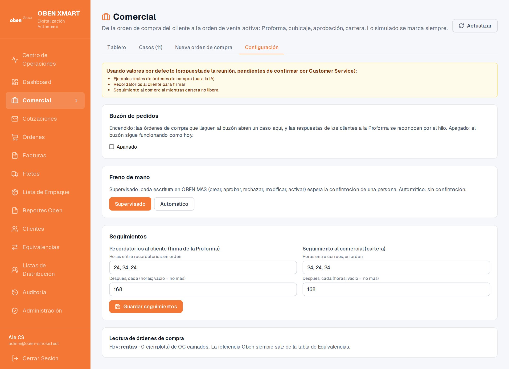
Oben decide cuánto automatizar
1
Buzón de pedidos
Apagado, el buzón sigue funcionando como hoy. Encendido, cada orden de compra abre un caso. Se enciende cuando empiece el piloto.
2
Freno de mano
Supervisado (cada escritura en OBEN MAS con confirmación) o automático. Se cambia con un clic, sin programar.
3
Seguimientos
Propuesta de la reunión: recordar al cliente cada 24 horas tres veces y luego semanal; lo mismo al comercial mientras cartera no libera. Customer Service ajusta los tiempos.
4
Lectura de órdenes
Hoy por reglas; con ejemplos reales de órdenes también puede leerlas con IA. La referencia Oben siempre sale de la tabla de equivalencias, nunca de la IA.
También hay una pestaña Nueva orden de compra para registrar a mano una OC que llegó por otro canal (WhatsApp, teléfono); sigue exactamente el mismo camino que un correo.
Oben Xmart · Cómo funciona12
Maestros · Equivalencias y clientes
Datos de prueba
Lo que Customer Service sabe de memoria, cargado una sola vez
oben-xmart / equivalenciasSIMULADO
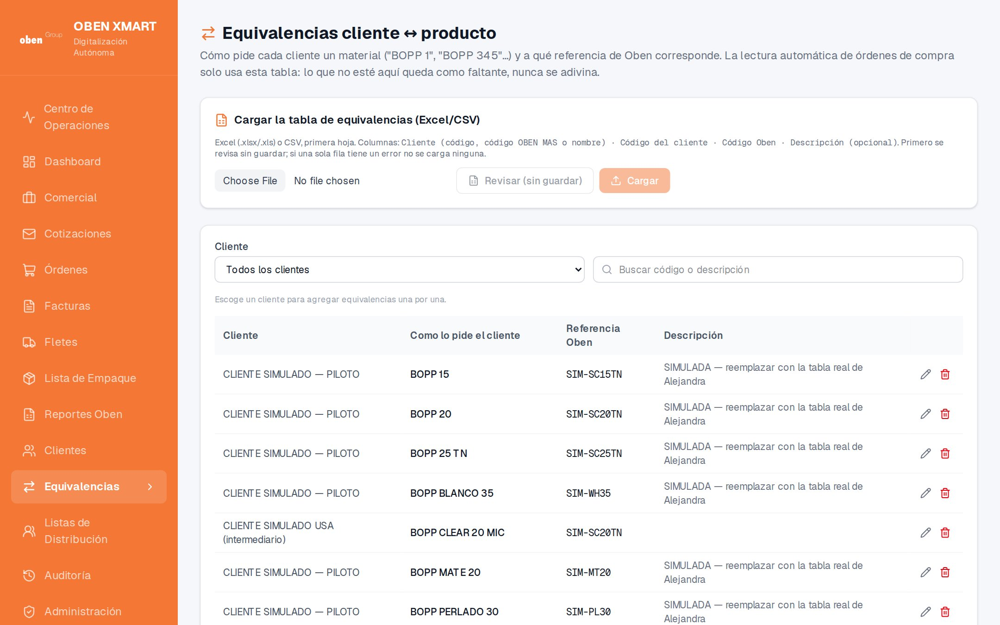
Equivalencias: cómo pide cada cliente y a qué referencia Oben corresponde ("BOPP 15" → referencia Oben). Se cargan desde Excel con vista previa; si una fila tiene error, no se carga nada.
oben-xmart / clientesSIMULADO
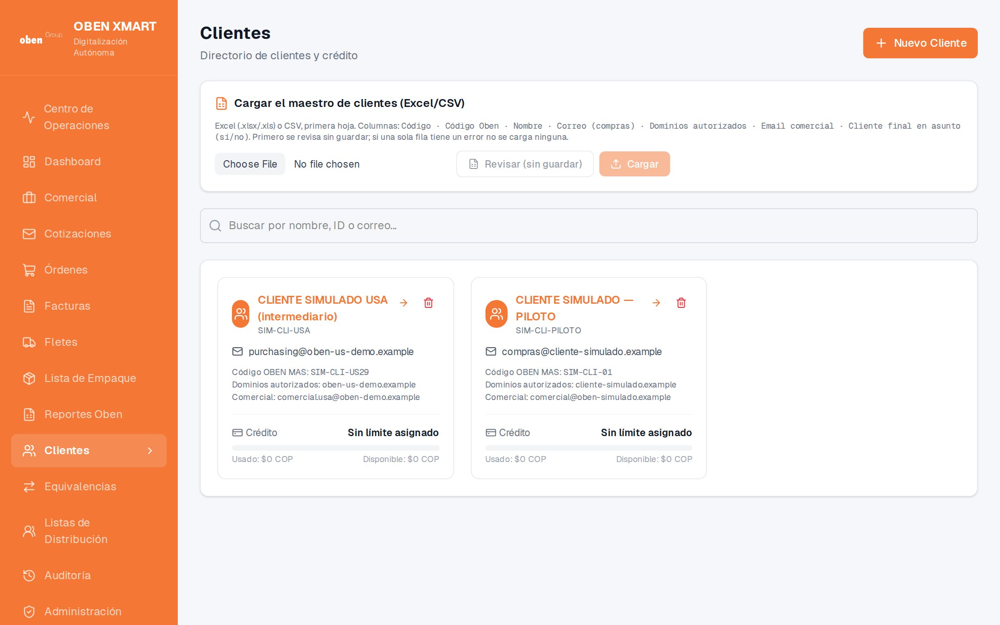
Maestro de clientes: código en OBEN MAS, dominios de correo autorizados, comercial a cargo y si es intermediario (con el cliente final en el asunto). También se carga desde Excel.
Oben Xmart · Cómo funciona13
Lista de Empaque · Automática
En producción
Aprobado el corte, el paquete de documentos sale solo
Es la parte que ya funciona en el servidor de Oben con datos reales. El correo "OV Aprobada En Corte" dispara la consulta a Oben y el envío a COMEX, sin intervención.
1
Consulta en vivo
Uno a uno (la API de Oben no admite consultas simultáneas): Lista Especial, Unificada, Detallada, Consumo de Material de Empaque, Consumo de Materia Prima y la Hoja de Costos, un archivo por línea.
2
Formato de Oben
Excel con el logo y la estructura de los archivos que Oben ya envía; la Lista Especial con sus tres hojas; Solefilmes en PDF "Shipment Traceability" solo cuando el cliente es Solefilmes.
3
Completo o nada
Si un reporte no trae datos, no se adjunta un Excel vacío: la orden se reintenta cada 10 minutos y, al quinto intento, se escala a José y Jorge.
4
Confirma a Oben
Tras el envío se registra en Oben que la documentación ya salió.
A COMEX · paquete completo (demo)
Para: comex@oben-demo.example (lista de distribución "Lista de Empaque")
[SIMULADO] Lista de Empaque — Orden 10801
Adjuntos los documentos de la orden 10801, generados automáticamente al recibir la aprobación de corte. En el servidor de Oben el correo dice que los datos vienen en vivo del sistema real; en pruebas dice que vienen del simulador.
Sin liberación de cartera, no hay Lista de Empaque
1
Retenidas por cartera
Si la orden llega aprobada en corte pero cartera no la ha liberado (PND), la Lista de Empaque no se genera y la orden queda en este panel.
2
Se revisa sola
Cada 6 horas se vuelve a consultar cartera; apenas libere, el paquete se genera y se envía sin que nadie lo pida.
3
Decisión humana
"Cartera ya liberó" o "Cancelar" si el pedido se dio de baja, con motivo y registro en auditoría.
A cartera, con copia a COMEX
[SIMULADO] Orden 10811 — retenida por cartera: la Lista de Empaque no se genera
Se vuelve a verificar automáticamente cada 6 horas. Apenas cartera libere, la Lista de Empaque se genera y se envía sola.
El estado de cartera viene de OBEN MAS. Hasta que exista esa API se simula, y un dato simulado nunca retiene ni libera una orden real.
Oben Xmart · Cómo funciona15
Reportes Oben
En producción
oben-xmart / reportesSIMULADO
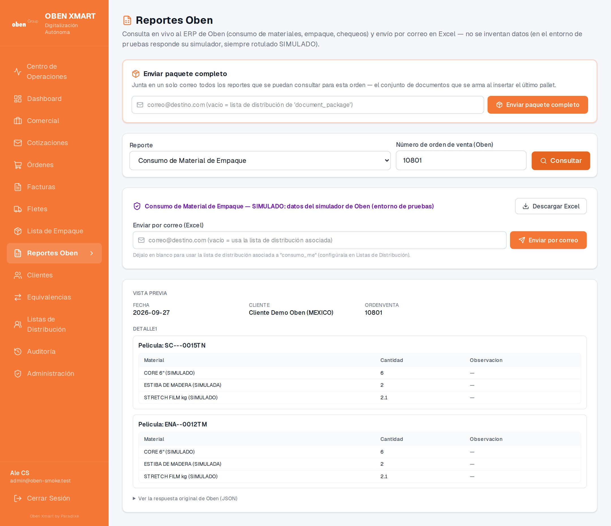
Cualquier reporte, cuando se necesite
1
Consulta por orden de venta
Consumo de materiales, empaque unificado y detallado, chequeos: se consulta en vivo y se ve en pantalla.
2
Descarga o envío
Excel en el formato de Oben, por descarga o por correo a la lista de distribución asociada o a un destinatario puntual.
3
Paquete completo a pedido
El mismo paquete del envío automático se puede reenviar a mano, por ejemplo a un cliente que lo pide de nuevo.
Arriba de cada consulta el sistema dice de dónde vienen los datos: "datos reales de Oben" en el servidor de Oben o "SIMULADO" en pruebas.
Oben Xmart · Cómo funciona16
Liquidación de exportación
InstaladoFórmula Incoterm
Liquidar una Proforma sin hoja de cálculo paralela
1
Borrador con los datos de Oben
Kilos y valor FOB por línea desde la Proforma; para destino USA, Entry Fee, ISF y Harbor Maintenance desde el maestro de tarifas. Lo que no está queda listado como faltante.
2
Registro en Oben, una sola vez
Encabezado y detalle por línea. Una Proforma nunca se liquida dos veces; si la conexión se corta a mitad, pide confirmación antes de reintentar.
3
Correo de cierre
Al concluir, sale a COMEX y Facturación con la Lista de Empaque Unificada y la Proforma aprobada, como lo pide el documento OBEN MAS–Paradixe.
Candado: la fórmula de Incoterm (flete, seguro, otros gastos) está simulada hasta recibir la de José. Mientras sea simulada, ninguna liquidación se puede registrar en el sistema real.
Vista previa del correo de cierre (demo)
Para: comex@oben-demo.example, facturacion@oben-demo.example (lista de distribución "Cierre de Liquidación")
[SIMULADO] Liquidación concluida — PF 11001 / OV 10801
Cliente Demo Oben (MEXICO). Adjuntos: Lista de Empaque Unificada y Proforma. El envío queda bloqueado mientras la liquidación no esté completa en Oben y mientras haya adjuntos simulados.
Borrador de la PF 11001 en el entorno de pruebas (valores simulados).
Oben Xmart · Cómo funciona17
Facturación
InstaladoProveedor DIAN
El borrador de la factura, armado con los datos de la orden
1
Datos de la orden
Cliente, país, Proforma, orden de compra, contenedor, películas, precios y kilos, desde la Lista de Empaque Unificada y la liquidación.
2
Dirección de entrega desde OBEN MAS
Ningún reporte actual trae la dirección; se tomará de OBEN MAS cuando exista su API (hoy, simulada y rotulada en el PDF).
3
Factura electrónica
Se emite al enviar a COMEX a través del proveedor de facturación electrónica que Oben defina. Mientras tanto el borrador dice claramente que no tiene validez fiscal.
Nacional completo y nacional parcial siguen la misma lógica; el parcial necesita saber en OBEN MAS cuándo un despacho es parcial.
borrador de facturación · OV 10801SIMULADO
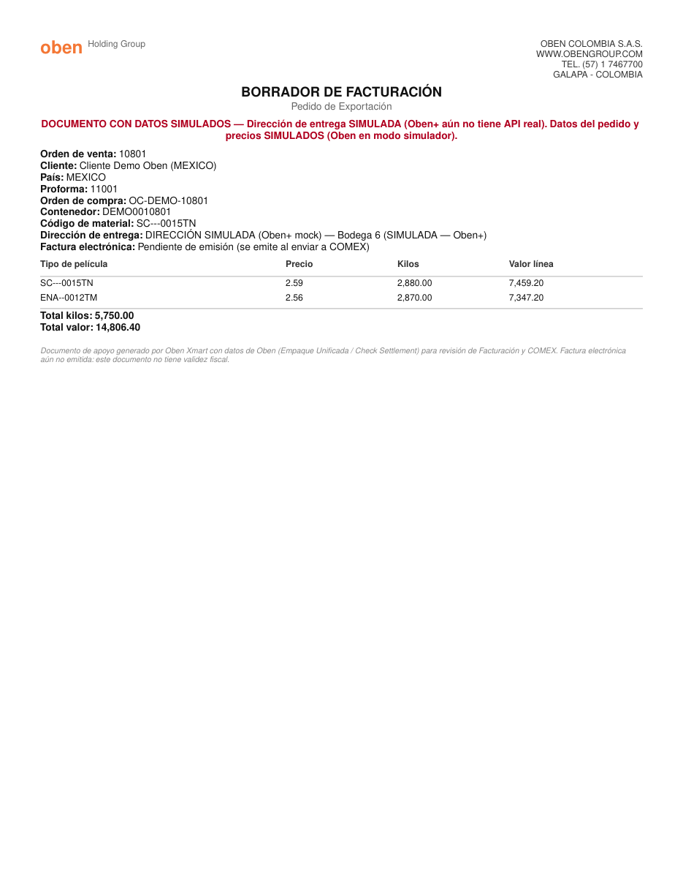
Oben Xmart · Cómo funciona18
Listas de distribución y auditoría
Quién recibe qué, y qué pasó, sin preguntarle a nadie
oben-xmart / distribucionSIMULADO
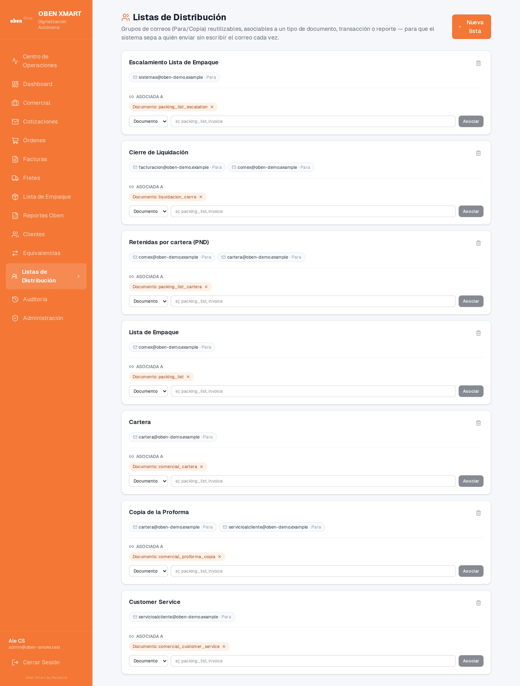
Listas de distribución: Customer Service, copia de la Proforma, cartera, Lista de Empaque, retenidas por cartera, cierre de Liquidación y escalamiento. Oben las administra; el código no tiene correos escritos a mano.
oben-xmart / auditoriaSIMULADO
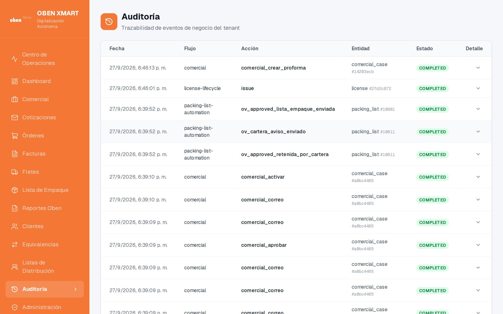
Auditoría: cada consulta, envío, confirmación y cambio de configuración queda registrado con fecha, usuario y resultado.
Oben Xmart · Cómo funciona19
Qué es real hoy
Estado de cada pieza, sin maquillaje
Pieza
Estado
Qué depende de Oben
Lista de Empaque automática, reintentos y escalamiento
En producción
Nada: corre con la API de reportes de Oben y el correo real.
Reportes Oben y consulta de Lista de Empaque
En producción
Nada.
Regla PND (retenidas por cartera)
Instalado
API de cartera por orden de venta en OBEN MAS (mientras tanto, simulada y sin efecto sobre órdenes reales).
APIs de OBEN MAS: estado de la Proforma, cartera, maestro de clientes, PDF oficial y transacciones (crear, modificar, aprobar, anular, activar).
Equivalencias y maestro de clientes
Instalado
La tabla de equivalencias y los datos de los clientes del piloto (Alejandra).
Liquidación: borrador, registro y correo de cierre
Instalado
Fórmula de Incoterm; evento de "último pallet en bodega" para dispararla sola.
Facturación: borrador PDF y factura electrónica
Instalado
Proveedor de facturación electrónica (DIAN); dirección de entrega desde OBEN MAS; identificar despachos parciales nacionales.
"Instalado" = en el servidor de Oben desde el 27 de septiembre de 2026, con pruebas automáticas en verde; se activa con el piloto. Lo que depende de Oben funciona contra un simulador rotulado y se conecta cuando exista.
Oben Xmart · Cómo funciona20
Lo que necesitamos de ustedes
Con esto, lo simulado pasa a real
José · OBEN MAS y sistemas
8 puntos
APIs de OBEN MAS (mismo esquema de APIConsultaParadixe): estado y fechas de la Proforma con dirección y número de OV; cartera por OV; maestro de clientes; PDF oficial de la Proforma (¿base64, URL o archivo?); transacciones crear, modificar, aprobar, anular y activar.
Ambiente de pruebas para esas transacciones, y el buzón que recibe las órdenes de compra (las credenciales se configuran en el servidor, no por chat).
PND: ¿confirmas que un pedido PND recibe "OV Aprobada En Corte" aunque cartera no haya liberado, y que la Lista de Empaque no debe generarse? ¿spApproveComex habilita el predespacho?
Fórmula de Incoterm para Liquidación (flete, seguro, otros gastos).
¿Hay un evento o correo cuando el último pallet entra a bodega de Producto Terminado?
Proveedor de facturación electrónica (DIAN): ¿definido?
Cierre de Liquidación: ¿sirve el PDF oficial de la Proforma o debe ser la copia firmada por el cliente?
Despachos parciales nacionales: ¿cómo se identifican en OBEN MAS?
Alejandra · Customer Service
7 puntos
Equivalencias de 1 o 2 clientes del piloto en Excel: Cliente | Código del cliente | Código Oben | Descripción.
De esos clientes: código en OBEN MAS, dominios de correo autorizados, comercial a cargo y si es intermediario.
Reenviar 3 a 5 órdenes de compra reales tal como llegan (con adjuntos, incluida la más desordenada) y la Proforma que resultó de cada una.
Seguimientos: ¿sirve recordar al cliente cada 24 h (3 veces) y luego semanal, y lo mismo al comercial mientras cartera no libera?
Gramos a micras: ¿hay una tabla o regla? Mientras tanto se resuelve con las equivalencias.
¿Cartera recibe copia de la Proforma al enviarse al cliente, o solo cuando el cliente la aprueba?
Destinatarios de cada aviso (Customer Service, copia de Proforma, cartera y, con José, COMEX + Facturación para el cierre): quién va en "para" y quién en copia.
Oben Xmart · Cómo funciona21
Próximos pasos
Del entorno de pruebas al piloto
El primero ya está hecho. Los demás se pueden avanzar sin esperar al siguiente.
PASO 1 · HECHO
Instalado en el servidor de Oben
Todo el desarrollo quedó instalado el 27 de septiembre de 2026. Nada cambia para los usuarios hasta encender el buzón.
Paradixe
PASO 2
Cargar los datos del piloto
Equivalencias y maestro de 1 o 2 clientes desde Excel, más las listas de distribución.
Alejandra + Paradixe
PASO 3
Piloto supervisado
Buzón encendido para esos clientes, con freno de mano: cada paso lo confirma Customer Service.
Customer Service
PASO 4
Conectar OBEN MAS
A medida que José entregue cada API, esa parte deja de estar simulada. No hay que rehacer pantallas ni flujos.
José + Paradixe
PASO 5
Pasar a automático
Cuando Customer Service confíe en los resultados, se cambia a automático por cliente o para todos.
Decisión de Oben
Las personas deciden; el sistema ejecuta y deja constancia.
En producción Lista de Empaque automática y Reportes Oben
Instalado Comercial, maestros, regla PND, Liquidación y Facturación
Espera a Oben APIs de OBEN MAS, fórmula Incoterm, proveedor DIAN